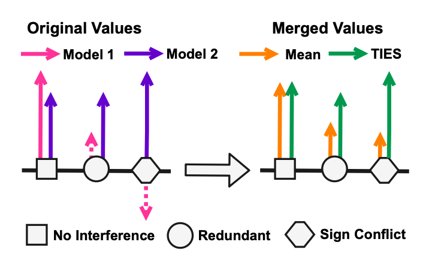
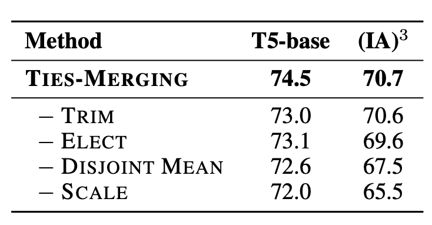

Ties-Merging#
Description#
간단 요약#
weight average는 간섭 문제가 있음.
이 간섭을 해결하기 위하여weight average 하기 전에 trim과 sign matching을 해줌.
name: TIES-MERGING: Resolving Interference When Merging Models
date: 23.06 (arxiv)
Introduction#
현재와 같은 1태스크 1모델 시스템의 문제점
매 태스크마다 새로 학습해야 함
이미 학습된 모델은 개선이 어려움 이 문제점을 해결하기 위해 보통 Multitask Learning이 들어가지만, 1) 모든 태스크에 대한 데이터가 있어야 한다. 2) 데이터 섞는 비율도 중요하다 3) 자연스럽게 데이터가 커지므로 학습 cost도 적지 않다
그래서 등장한 것이..
Weight Merging#
일반적으로 모델 병합은 여러 태스크로 튜닝된 모델을 하나로 합쳐 큰 general 모델로 만드는 것을 의미한다. MoE 같은 방식과는 다르게 모델이 하나로 합쳐지기 때문에 저장 용량이 적다는 장점이 있다 병합은
weight을 전부 더하거나
weight을 average하거나,
average할 때 각 weight의 priority를 좀 고려하도록 하거나
등등이 있다. 자세한 것은 위의 서베이를 참조하면 좋을듯
어쨌든 위의 방식들은 결과적으로 weight를 섞는 것이기 때문에 서로 다른 모델 사이에 간섭이 생기는 경우, 성능 저해를 야기할 수 있다.
이 논문에서는 이 간섭의 원인에 대해서 우선 분석하고 있다. 
1) 중복 parameter로 인한 간섭 발생#
(양측 그림의 동그라미 부분) 동일한 parameter에서 한 모델은 중요한 값(보라색)으로 표기했는데 다른 모델은 그렇지 않은 값(분홍색)으로 표기한 경우, 보라 값이 묻히게 된다(오렌지색)
2) Sign disagreement로 인한 간섭 발생#
동일한 parameter에서 한 모델은 양수(보라색), 한 모델은 음수(분홍색)으로 마킹하는 경우, 두 값의 평균은 원 값보다는 자연히 줄어들게 된다.
두 원인 모두 전체적으로 모델 간의 간섭으로 인해 **유의미한 값의 차이가 사라지게 된다(smoothing)**는 결론을 가리킨다.
Method: Ties-Merging (Trim, Elect Sign & Merge)#

각각의 모델 parameter값들을 \(\theta_{t}, t \in [1...n]\) 라고 할 때, task vector는 모델의 초기 parameter값 \(\theta_{init}\) 과 각각의 \(\theta_t\) 간의 차로 정의된다.
이 task vector를 통해 최종 모델 parameter 값인 \(\theta_{m}\)을 만드는 것이 목적
간단히 설명하면
top-k로 각각의 task vector 값을 자르고
벡터 방향을 다수결로 결정하고
그 방향에 해당되는 벡터값들을 합쳐서 최종 task vector를 만들고
최종 vector로 \(\theta_m\) 만들기 뿅
1)에서 top-k로 값을 잘라 버리면 모델의 성능이 떨어지지 않을까?라는 의문에 대한 실험
상세#
definition#
task vector: \(\tau_{t} = \theta_{t} - \theta_{init}\)
sign vector: \(\gamma_{t} = sgn(\tau_t), sgn(x) \star |x| = x\)
magnitude vector: \(\mu_t = |\tau_t|\)
\(\tau_t = \mu_t \odot \gamma_t\)
구현#
Trim
각각의 모델에 대하여 top-k의 task value만 유지
\(\hat{\tau_t} = \text{keep_topk_reset_rest_to_zero}(\tau_t, k)\)
Elect Sign 전체 task vector의 magnitude가 커지는 방향으로 sign vector를 재조정 \(\gamma_m = sgn(\sum_{t=1}^{n}{\hat{\tau_t}})\)
Disjoint Merge 위에서 계산한 sign vector 방향의 모든 magnitude를 average \(\mathcal{A}^p = \left\{ t \in [n] | \hat{\gamma_t^p} = \gamma_m^p \right\}\)
마지막으로 최종 \(\theta_m\) 구하기 \(\theta_m = \theta_{init} + \lambda \star \tau_m\) \(\lambda\) 값은 scaling hyperparameter
Experiments#
다른 방식에 비해 튜닝 시 성능이 좋음 같은 데이터로 튜닝된 여러 모델들 (e.g. 허깅페이스에 있는 무수히 많은 QA모델)을 사용하는 경우 더 좋은 성능을 낼 수 있음
이 모델을 초기 모델로 잡는 경우 튜닝 시 성능도 더 좋아짐
분석#

각각의 효과를 알아보기 위해 trim / elect 중 하나만 써서 실험하였음.
좌): 1개일 때랑 1개보다 많을 때랑 비교해도 크게 달라지지 않는다 = 작은 value에 의해 shrink되지 않는다.
우): parameter끼리 sign이 갈리더라도 평균 magnitude가 기존보다는 유지됨(보라)

top-N / bottom-N 의 sign vector를 특정 확률(x축)로 뒤집어줌.
top-N은 반대 방향으로 갈수록 성능이 급격히 떨어진다 (= sign interference를 주의해야 한다 & top-N은 중요하다 & bottom은 쓸다리가 없으니 trim해도 좋다)

ablation study.
Discussion#
실험이 T5로 진행됨. 실제 llm에서 어떻게 작용하는지는 이 뒤에 나오는 논문인 lm-cocktail을 찾아봐야 할 것으로 보임.
현재 가장 많이 쓰이는(open-llm-leaderboard 기준) SLERP방식은 따로 비교하지 않았다는 점? cocktail논문에서는 이걸 다루고 있을 지 궁금
실험에서 초기 모델로 썼을 때 성능이 올랐다고 하는 것을 봐서, 지금 나온 solar inst 모델들을 기반으로 하고 거기다가 디피오나 셀프 inst등을 멕이면 더 잘 하지 않을까..? 하는 소소한 의문